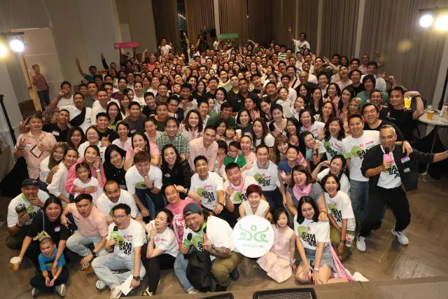
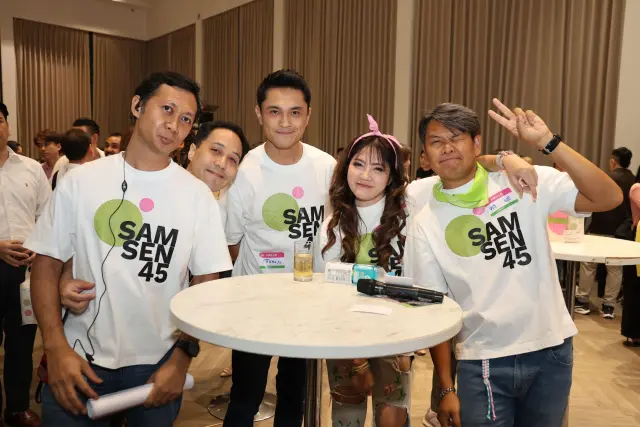
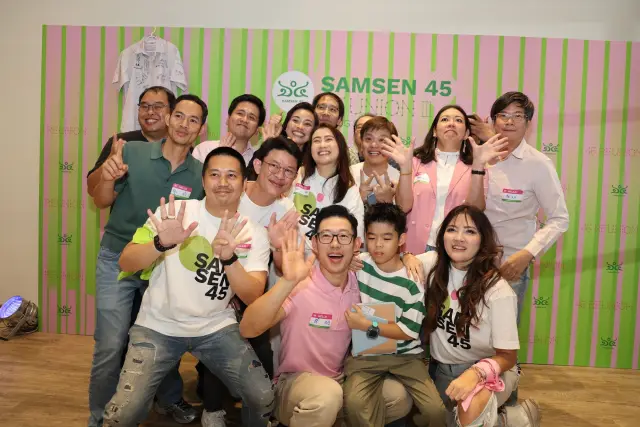
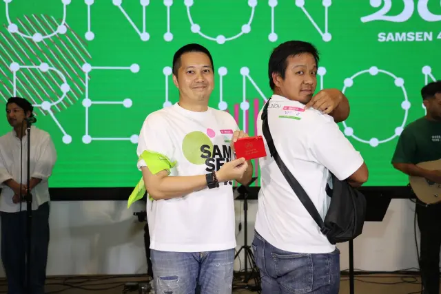
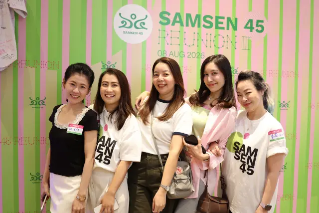
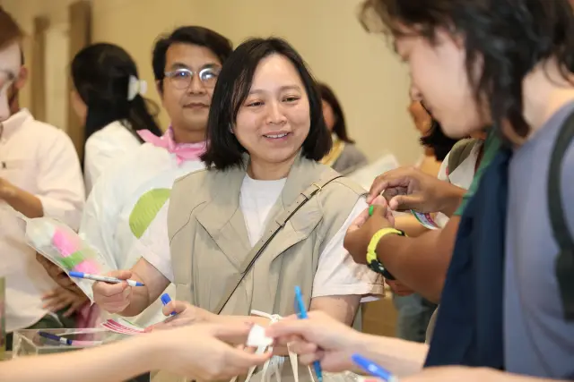
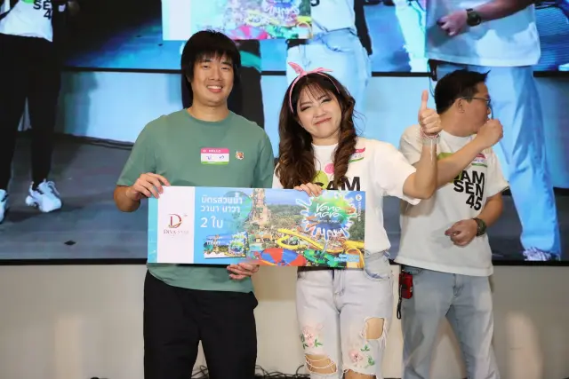
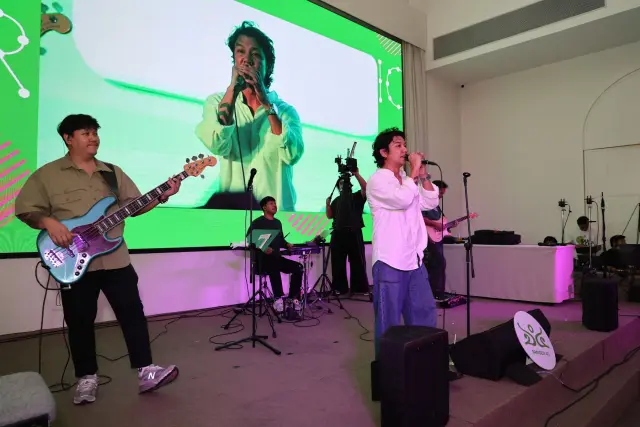
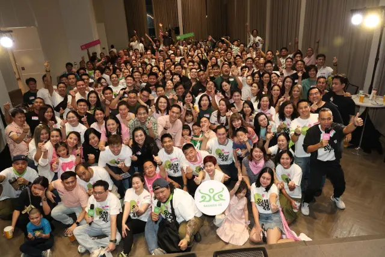

--
วัน


หนึ่งค่ำคืนที่เพื่อน 250 คนกลับมาอยู่ในห้องเดียวกันอีกครั้ง เสียงหัวเราะ เพลงเก่า และชื่อเล่นที่ไม่ได้ถูกเรียกมานาน — ขอบคุณทุกคนที่ทำให้คืนนั้นเกิดขึ้นจริง
ภาพทั้งหมด 1,197 ภาพ อยู่ใน Google Drive ของรุ่น — ดาวน์โหลดได้ทุกภาพ ไม่มีลายน้ำ · ติดตามต่อที่กลุ่ม Facebook





8 เดือน 8 ปี 2569 — ฤกษ์เลขสวยที่พวกเรานัดกันไว้ กลายเป็นค่ำคืนที่ยาวกว่าที่คิด และจบเร็วกว่าที่อยากให้เป็น




ทีมงานและเพื่อน ๆ ช่วยกันเก็บภาพไว้เกือบ 1,200 ภาพ เราเลือกมา 45 ภาพพอดี — เท่ากับรุ่น 45 — ให้ดูกันก่อนที่นี่ กดที่ภาพเพื่อดูขนาดเต็ม
กดที่ภาพเพื่อขยาย · ใช้ปุ่มลูกศรซ้าย–ขวาเลื่อนดูต่อ · กด Esc เพื่อปิด
หน้าฉากเขียว–ชมพู ตั้งแต่ 17.31 ถึง 20.00 น. มีทั้งภาพนิ่ง 213 ช็อตและบูมเมอแรงอีก 69 คลิป — เลือกดูทีละคลิปได้ตามใจ
กดที่ภาพเล็กเพื่อเปลี่ยนคลิป · กดปุ่มหยุดได้ถ้าไม่อยากให้ภาพขยับ · ภาพนิ่งและคลิปทั้งหมดดูได้ที่ fotoshare หรือในโฟลเดอร์ Drive
เปิดให้ทุกคนเข้าดูและดาวน์โหลดได้เลย ไม่ต้องขอสิทธิ์ ไม่มีลายน้ำ — เลือกภาพที่ชอบ เซฟเก็บไว้ได้ตามสบาย
ภาพชุดใหญ่ตลอดค่ำคืน ตั้งแต่ลงทะเบียน ดินเนอร์ กิจกรรมบนเวที ไปจนถึงภาพหมู่รวมรุ่น รวมโฟลเดอร์โฟโต้บูธอีก 213 ช็อตพร้อมคลิปสั้น
เปิดโฟลเดอร์ →มุมที่ช่างภาพไม่ได้เก็บ — เบื้องหลังการเตรียมงาน โต๊ะลงทะเบียน และภาพเซลฟีของกลุ่มเพื่อน โฟลเดอร์นี้เปิดให้ทุกคนอัปโหลดเพิ่มได้ ลากรูปในมือถือของคุณลงไปได้เลย ไม่ต้องขออนุญาต ยิ่งช่วยกันลง คลังภาพของรุ่นก็ยิ่งครบ
อัปโหลดรูปของคุณ →📸 ชวนเพื่อนช่วยกันลงรูป — รูปที่ยังอยู่ในมือถือของแต่ละคน คือส่วนที่คลังภาพนี้ยังขาด ลงเพิ่มได้เรื่อย ๆ ไม่มีกำหนดปิด
มีภาพของคุณอยู่ในนี้แล้วไม่สบายใจ? แจ้งทีมงานที่ กลุ่ม Facebook หรือ samsen45@gmail.com เราจะนำออกให้ทันที
งานนี้จัดกันเองโดยเพื่อน ๆ ในรุ่น ไม่มีออร์แกไนเซอร์มืออาชีพ — สิ่งที่จะทำให้ครั้งหน้าดีขึ้นคือความเห็นตรง ๆ จากคุณ ทั้งเรื่องที่ชอบและเรื่องที่ควรแก้
ทำแบบประเมินหลังงาน →คืนสู่เหย้าจบไปแล้ว แต่รุ่น 45 ยังอยู่ครบ กลุ่ม Facebook ของรุ่นคือที่ที่เราคุยกันต่อ — ประกาศงานครั้งหน้า นัดเจอกันแบบกลุ่มเล็ก ตามหาเพื่อนที่ยังไม่ได้เจอ และแชร์ภาพที่ยังตกหล่น
เข้ากลุ่ม Facebook ของรุ่น →ก่อนจะมีค่ำคืนนี้ เรามีรูปหมู่ในชุดนักเรียนกันมาก่อน — เปิดอ่านแบบพลิกทีละหน้าได้เลย
เข้าไปที่โฟลเดอร์ Google Drive ในหัวข้อ ไฟล์ภาพเต็ม ได้เลย ไม่ต้องขอสิทธิ์เข้าถึง กดเลือกภาพที่ต้องการแล้วกดดาวน์โหลด หรือจะดาวน์โหลดทั้งโฟลเดอร์เป็นไฟล์ ZIP ก็ได้ ภาพทุกไฟล์เป็นความละเอียดเต็มและไม่มีลายน้ำ ใช้พิมพ์หรือโพสต์ต่อได้ตามสบาย
ยินดีมาก — โฟลเดอร์ [Community] รูปจากเพื่อนๆ เปิดให้ทุกคนอัปโหลดเพิ่มได้ กดเข้าโฟลเดอร์แล้วลากไฟล์เข้าไปได้เลย ถ้าอัปโหลดไม่สำเร็จหรือไฟล์เยอะเกินไป ทักทีมงานที่กลุ่ม Facebook เดี๋ยวช่วยจัดการให้
มี — บูมเมอแรง 69 คลิปจากโฟโต้บูธ (หยิบมาแสดงบนหน้านี้แล้ว 12 คลิป) เก็บไว้ครบในโฟลเดอร์ย่อย clips ภายในโฟลเดอร์ fotoshare ของทีมงาน ส่วนคลิปบรรยากาศบนเวทีและวิดีโอที่เพื่อน ๆ ถ่ายกันเอง ทยอยแชร์กันอยู่ในกลุ่ม Facebook ของรุ่น
แจ้งทีมงานได้ทันทีที่ กลุ่ม Facebook หรืออีเมล samsen45@gmail.com บอกชื่อไฟล์หรือส่งภาพมาให้ดูก็ได้ เราจะนำภาพนั้นออกจากทั้งเว็บไซต์และโฟลเดอร์ให้เร็วที่สุด ไม่ต้องเกรงใจ
ตอบได้เลยตอนนี้ ใช้เวลาแค่ 2 นาที และไม่ต้องระบุชื่อหากไม่สะดวก ยิ่งตอบเร็วยิ่งดี เพราะทีมงานจะรวบรวมความเห็นทั้งหมดไปสรุปกันในช่วงถัดไป เขียนตรง ๆ ได้เต็มที่ ทั้งเรื่องที่ประทับใจและเรื่องที่ควรปรับ
ถ้ามาร่วมงานแล้วแต่ยังไม่ได้รับกระเป๋าผ้า แก้วเก็บความเย็น หรือเสื้อยืดที่สั่งพรีออเดอร์ไว้ ทักทีมงานที่กลุ่ม Facebook พร้อมแจ้งชื่อ–นามสกุลและห้องเรียนเดิม เดี๋ยวเราตรวจสอบรายการให้และนัดรับกันอีกที
ตั้งใจให้มีแน่นอน แต่ยังไม่ได้กำหนดวัน ครั้งนี้ทีมงานใช้เวลาเตรียมกันหลายเดือน และสิ่งที่จะกำหนดหน้าตาของครั้งหน้าคือคำตอบในแบบประเมินของทุกคน ประกาศทุกอย่างจะออกที่กลุ่ม Facebook ของรุ่นเป็นที่แรก
ยังมีข้อสงสัย? ทักมาได้ที่ Facebook · กลุ่ม Samsen 45 หรือ samsen45@gmail.com